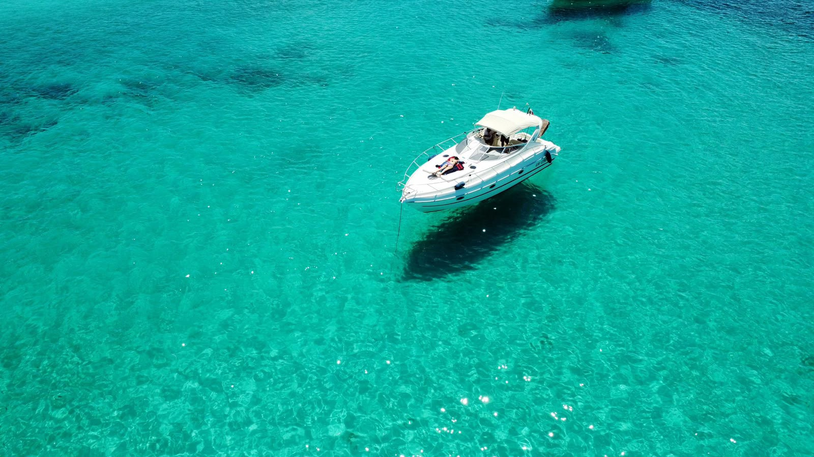
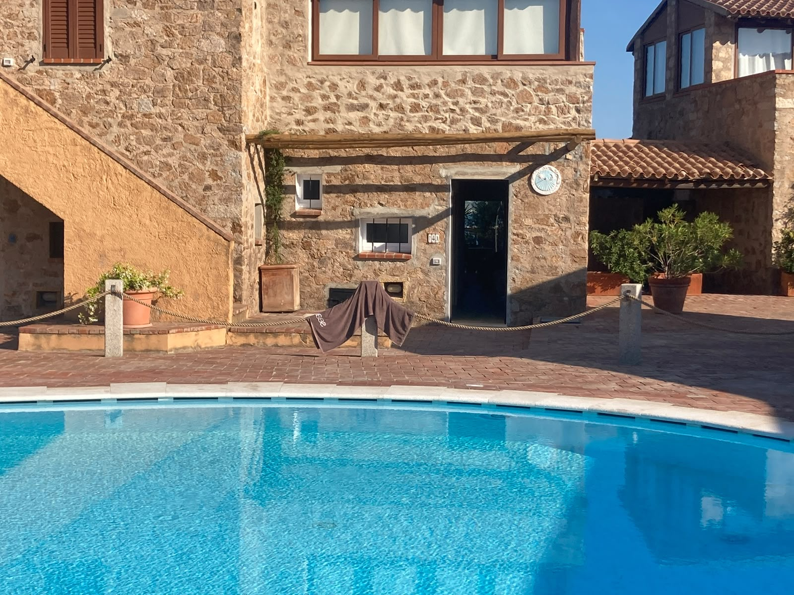
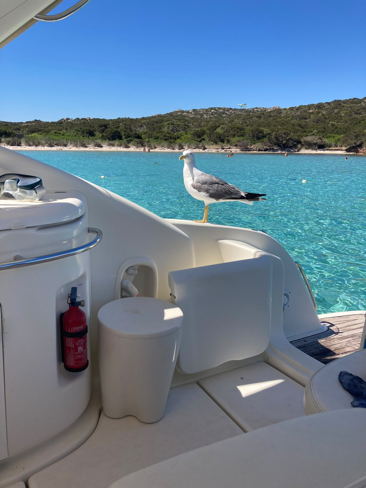

Costa Smeralda · La Maddalena
Un'accoglienza esclusiva a bordo del Cranchi Zaffiro 34 Cri Cri II e splendidi appartamenti vista mare a Baja Sardinia. Viziatevi con il meglio della Sardegna.

Cri Cri II Navigazione in Costa SmeraldaLa rotta
Scegliete tra il classico tour completo dell'Arcipelago di La Maddalena o una navigazione più breve ed economica tra Cala Granu, Porto Sole e il Golfo Pevero.
Giornata intera tra le isole del Parco Nazionale: Spargi, Budelli, Santa Maria. Acque limpide, soste bagno e pranzo nei migliori ristoranti o in cala.
Vedi l'itinerario →Per un'uscita più breve tra le baie a due passi da Porto Cervo, ideali per mezza giornata di mare, relax e aperitivo al tramonto.
Vedi l'itinerario →
Ospitalità a terra Residency con piscina a Baja SardiniaNon solo mare
Volete prolungare il vostro soggiorno nel cuore della Costa Smeralda? Mettiamo a disposizione dei nostri ospiti **due appartamenti esclusivi di circa 50 mq**, entrambi situati in un tranquillo residence con grande piscina e favolosa vista sul mare.
Soluzioni perfette, curate nei minimi dettagli e a pochi passi dalle spiagge più belle, ideali per vivere una vacanza all'insegna della comodità e del relax totale.

Comfort totale Open bar e assistenza dedicataIl nostro stile
A bordo della Cri Cri II troverete sempre un equipaggio di due persone a vostra completa disposizione. Open bar con bevande fresche incluso e la massima flessibilità per organizzare pranzi nei ristoranti esclusivi de La Maddalena (come La Grotta o La Scogliera) o ricevere sushi e crudité direttamente in cala a Cala Soraya.
Scopri i servizi di bordoPreventivi su misura
Contattateci direttamente per definire il vostro itinerario in barca o per verificare la disponibilità dei nostri appartamenti a terra.